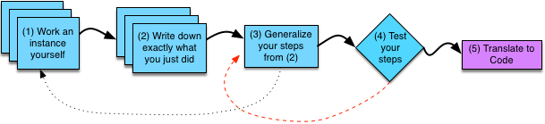

Devising an Algorithm: Steps 1-4¶
These 7 steps — and all the material that follows — was created by Drew Hilton, Anne Bracy, and Genevieve Lipp, and has been subject to only a few minor modifications by myself (Nick Eubank) for use in this bootcamp.
What Is An Algorithm¶
As we discussed earlier, an algorithm is a clear set of steps to solve any problem in a particular class. Typically, algorithms have at least one parameter; however, algorithms with no parameters exist—they are simply restricted to one specific problem, rather than a more general class. We can discuss and think about algorithms in the absence of any particular knowledge of computers—a good algorithm can not only be translated into code, but could also be executed by a person with no particular knowledge of the problem at hand.
Algorithms that computers work on deal with numbers—in fact the lesson on Types will discuss the concept of “Everything is a number,” which is a key principle in programming. Computers can only compute on numbers; however, this course will also illustrate how we can represent a variety of useful things (letters, words, images, videos, sound, etc.) as numbers so that computers can compute on them. As a simple example of an algorithm that works with numbers, we might consider the following algorithm (which takes one parameter N, a non-negative integer):
Given a non-negative integer N:
- Make a variable called x, set it equal to (N+2)
- Count from 0 to N (Include both ends), and for each number (call it "i") that you count,
-- Write down the value of (x * i)
-- Update x to be equal to (x + i * N)
When you finish counting, write down the value of x.
For any non-negative integer N that I give you, you should be able to execute these steps. If you do these steps for N = 2, you should come up with the sequence of numbers 0 4 12 10. These steps are unambiguous as to what should happen. It is possible that you get the wrong answer if you misunderstand the directions, or make arithmetic mistakes, but otherwise, everyone who does them for a particular value of N should get the same answer. We will also note that this algorithm can be converted into any programming language quite easily—all that is needed is to know the basic syntax of the particular language you want.
You may wonder why we would want an algorithm that generates this particular sequence of numbers. In this case, it is just a contrived algorithm to show as a simple introductory example. In reality, we are going to devise algorithms that solve some particular problem. However, devising the algorithm for a problem takes some significant work, and will be the focus of discussion for the rest of this lesson.
Even though computers can only work with numbers, we can envision algorithms that might be executed by humans who can work on a variety of things. For example, we might write algorithms that operate on physical objects such as LEGO bricks or food. Even though such things would be difficult to implement on a computer (we would need the computer to control a robot to actually interact with the physical world), they are still instructive, as the fundamental algorithmic design principles are the same.
One exercise done at the start of some introductory programming courses is to have the students write down directions to make a peanut butter and jelly sandwich. The instructor then executes the algorithms, which are often imprecise and ambiguous. The instructor takes the most comical interpretation of the instructions to underscore that what the students wrote did not actually describe what they meant.
This exercise underscores an important point—you must specify exactly what you want the computer to do. The computer does not “know what you mean” when you write something vague, nor can it figure out an “etc.” Instead, you must be able to describe exactly what you want to do in a step-by-step fashion. Precisely describing the exact steps to perform a specific task is somewhat tricky, as we are used to people implicitly understanding details we omit. The computer will not do that for you (in any programming language).
Even though the “sandwich algorithm” exercise makes an important point about precisely describing the steps you want the computer to perform, it falls short in truly illustrating the hardest part of designing an algorithm. This algorithm has no parameters, so it just describes how to solve one particular problem (making a peanut butter and jelly sandwich). Real programming problems (typically) involve algorithms that take parameters. A more appropriate problem might be “Write an algorithm that takes a list of things you want in a sandwich and describes how to make the sandwich.”
Such a problem is much more complex but illustrates many concepts involved in devising a real algorithm. First, our algorithm cannot take a list of just anything to include in the sandwich—it really will only work with certain types of things, namely food. We would not expect our algorithm to be able to make us a “car, skyscraper, airplane” sandwich. These items are all the wrong type. We will learn more about types in programming later in this course.
Our algorithm may also have to deal with error cases. Even if we specify the correct type of inputs, the particular values may be impossible to operate on correctly. For example, “chicken breast” is food, but if the chicken breast has not been cooked yet, we should not try to make a sandwich out of it. Another error case in our sandwich creation algorithm might be if we specify too much food to go inside the sandwich (how do you make a sandwich with an entire turkey, 40 pounds of carrots, and 3 gallons of ice cream?). Of course, if we were writing this sandwich algorithm for humans, we could ignore this craziness because humans have “common sense”—however, computers do not.
Even if we ignore all of the error cases, our general algorithm is not as simple as just stacking up the ingredients on top of bread in the order they appear in the input. For example, we might have an input of “chicken, mustard, spinach, tomatoes.” Here, we probably want to spread the mustard on the bread first, then place the other ingredients on it (hopefully in an order that makes the most stable sandwich).
It would seem that writing a correct algorithm to make a sandwich from an arbitrary list of ingredients is quite a complex task. Even if we did not want to implement that algorithm in code, but rather have it be properly executed by a person with no common sense (or a professor with a comedic disregard for common sense), this task is quite challenging to do correctly. How could we go about this task and hope to get a good algorithm?
The wrong way to write an algorithm is to just throw some stuff on the page, and then try to straighten it out later. Imagine if we approached our sandwich example by writing down some steps and having someone (with no common sense) try them out. After the kitchen catches on fire, we try to go in and figure out what went wrong. We then tweak the steps, and try again. This time, the kitchen explodes instead. We repeat this process until we finally get something that resembles a sandwich, and the house did not burn down.
The previous paragraph may sound silly, but is exactly how many novice (and intermediate) programmers approach programming tasks. They jump right into writing code (No time to plan! Busy schedule!), and it inevitably does not work. They then pour countless hours into trying to fix the code, even though they do not have a clear plan for what it is supposed to do. As they “fix” the code, it becomes a larger, more tangled mess. Eventually, the program sort-of-kind-of works, and they call it good enough.
Instead, you should devise an algorithm in a disciplined fashion. The above figure shows how you should approach designing your algorithm. We will spend the next few sections discussing each of these steps in detail. However, note that “translate to code” comes only after you have an algorithm that you have tested by hand—giving you some confidence that your plan is solid before you build on it.

If you plan well enough and translate it correctly, your code will just work the first time. If it does not work the first time, you at least have a solid plan of what the code should be doing to guide your debugging.
Stepping Through an Algorithm By Hand¶
When we write an algorithm by hand, it should be precise enough that anyone can execute it and get exactly the right answer. You will see this in the next video. Note that once we translate algorithms to code, we will see that we can execute code by hand in much the same way.
Step 1: Work an Example Yourself¶
The first step in trying to design an algorithm is to work at least one instance of the problem—picking specific values for each parameter—yourself (by hand). Often this step will involve drawing a diagram of the problem at hand, in order to work it precisely. The more precisely you can perform this problem (including the more precisely you can draw a diagram of the situation if applicable), the easier the remainder of our steps will be. A good example of the sort of picture you might draw would be the diagrams drawn in many science classes (especially physics classes). The figure shows multiple copies of the box for this step layered one on top of the other, as you may need to perform this step multiple times to generalize the algorithm properly.
One of the examples of an algorithm that we mentioned early in this chapter was determining if a number is prime. If you were trying to write a function to determine if a number is prime, your first step would be to pick a number and figure out if it is prime. Just saying “ok, I know 7 is prime,” is not of much use—you just used a fact you know and did not actually work out the problem. For a problem such as this one, which has a “yes or no” answer, we probably want to work at least one example that comes up with a “yes” answer, and one that comes up with a “no” answer.
Another example would be if we wanted to write a program to compute x raised to the y power. To do Step 1, we would pick particular values for x and y, and work them by hand. We might try x = 3 and y = 4, getting an answer of 3^4 = 81.
If you get stuck at this step, it typically means one of two things. The first case is that the problem is ill-specified—it is not clear what you are supposed to do. In such a situation, you must resolve how the problem should be solved before proceeding. In the case of a classroom setting, this resolution may require asking your professor or TA for more details. In an industrial setting, asking your technical lead or customer may be required. If you are solving a problem of your own creation, you may need to think harder about what the right answers should be and refine your definition of the problem.
The second case where Step 1 is difficult is when you lack domain knowledge—the knowledge of the particular field or discipline the problem deals with. In our primality example, if you did not remember the definition of a prime number, that would be an example of lacking domain knowledge—the problem domain is mathematics, and you are lacking in math knowledge. No amount of programming expertise nor effort (“working harder”) will overcome this lack of domain knowledge. Instead, you must consult a source of domain expertise—a math textbook, website, or expert. Once you have the correct domain knowledge, you can proceed with solving your instance of the problem. Note that domain knowledge may come from domains other than math. It can come from any field, as programming is useful for processing any sort of information.
Sometimes, domain knowledge may come from particular fields of computer science or engineering. For example, if you intend to write a program that determines the meaning of English text, the relevant domain field is actually a sub-field of computer science, called Natural Language Processing. Here the domain knowledge would be the specific techniques developed to write programs that deal with natural language. A source of domain knowledge on English (an English professor or textbook) is unlikely to contain such information.
Step 2: Write Down What You Just Did¶
For this step, you must think about what you did to solve the problem, and write down the steps to solve that particular instance. Another way to think about this step, is to write down a clear set of instructions that anyone else could follow to reproduce your answer for the particular problem instance that you just solved. If you do multiple instances in Step 1, you will repeat Step 2 multiple times as well, once for each instance you did in Step 1. If an instruction is somewhat complex, that is all right, as long as the instruction has a clear meaning—later, we will turn these complex steps into their own programming problems, which will get solved separately.
The difficult part of Step 2 is thinking about exactly what you did to accomplish the problem. The difficulty here is that it is very easy to mentally gloss over small details, “easy” steps, or things that you do implicitly. This difficulty is best illustrated by the peanut butter and jelly exercise we mentioned earlier. Implicit assumptions about what to do, or relying on common sense lead to imprecise or omitted steps. The computer will not fill in any steps you omit, thus you must be careful to think through all the details.
Returning to our example of computing x to the y, we might write down the following steps for x = 3 and y = 4:
Multiply 3 by 3
- You get 9
Multiply 3 by 9
- You get 27
Multiply 3 by 27
- You get 81
81 is your answer.
The steps are very precise—and leave nothing to guess work. Anyone who can perform basic arithmetic can follow these steps to get the right answer. Computers are very good at arithmetic, so none of these steps is even complex enough to require splitting into a sub-problem.
Step 3: Generalize Your Steps¶
Having solved one or more problems from the class we are interested in and written down the particular steps we executed to solve them, we are ready to try to generalize those steps into an algorithm. In our Step 2 steps, we solve particular instances, but now we need to find the pattern that allows us to solve the whole class.
One way to think of this kind of generalization as a social scientist is that you are moving from writing rules that work for a case in your data (say, one observation) to a set of rules that you know will work for all observations in your data.
This generalization typically requires two activities. First, we must take particular values that we used and replace them with mathematical expressions of the parameters. Looking at our Step 2 steps for computing 3^4, we would see that we are always multiplying 3 by something in each step. In the more general case, we will not always use 3—we are using 3 specifically because it is the value that we picked for x. We can generalize this slightly by replacing this occurrence of 3 with x:
Multiply x by 3
- You get 9
Multiply x by 9
- You get 27
Multiply x by 27
- You get 81
81 is your answer.
The second common way to generalize steps is to find repetition—the same step repeated over and over. Often the number of times that the pattern repeats will depend on the parameters. We must generalize how many times to do the steps, as well as what the steps are. Sometimes, we may find steps which are almost repetitive, in which case we may need to adjust our steps to make them exactly repetitive. In our 3^4 example, our multiplication steps are almost repetitive—both multiply x by “something,” but that “something” changes (3 then 9 then 27). Examining the steps in more detail, we will see that the “something” we multiply is the answer from the previous step. We can then give it a name (and an initial value) to make all of these steps the same:
Start with n = 3
n = Multiply x by n
n = Multiply x by n
n = Multiply x by n
n is your answer
Now, we have the same exact step repeated three times. We can now contemplate how many times this step repeats as a function of x and/or y. We must be careful not to jump to the conclusion that it repeats x times because x = 3—that is just a coincidence in this case. In this case, it repeats y - 1 times. The reason for this is that we need to multiply four 3s together, and we already have one in n at the start, so we need y - 1 more. This would lead to the following generalized steps:
Start with n = 3
Count up from 1 to y-1 (inclusive), for each number you count,
- n = multiply x by n
n is your answer
We need to make one more generalization of a specific value to a function of the parameters. We start with n = 3; however, we would not always want to start with 3. In the general case, we would want to start with n = x:
Start with n = x
Count up from 1 to y-1 (inclusive), for each number you count,
- n = multiply x by n
n is your answer
Sometimes you may find it difficult to see the pattern, making it hard to generalize the steps. When this happens, returning to Steps 1 and 2 may help. Doing more instances of the problem will provide more information for you to consider, possibly giving you insight into the patterns of your algorithm. This process is often referred to as writing ‘pseudo-code’, as you are working to design an algorithm programmatically with no particular target language. Nearly all programmers make use of this method to ensure their algorithm is correct before writing any actual code.
Step 4: Test Your Algorithm¶
After Step 3, we have an algorithm that we think is right. However, it is entirely possible that we have messed up along the way. The primary purpose of Step 4 is to ensure our steps are actually right before we proceed. To accomplish this, we test our algorithm with different values of the parameters than the ones we used to design our algorithm. We execute our algorithm by hand and compare the answer it obtains to the right answer. If they differ, then we know our algorithm is wrong. The more test cases (values of parameters) we use, the more confident we can become that our algorithm is correct. Unfortunately, it is impossible to ensure that our algorithm is correct by testing. The only way to be completely sure that your algorithm is correct is to formally prove its correctness (using a mathematical proof), which is beyond the scope of this course.
One common type of mistake is mis-generalizing in Step 3. As we just discussed, one might think that the steps repeated x times because x = 3 and the steps repeated 3 times. If we had written that down in Step 3, our algorithm would only work when x = y – 1; otherwise we would count the wrong number of times and get the wrong answer. If that were the case, we would hopefully detect the problem by testing our algorithm by hand in Step 4. When we detect such a problem, we must go back and re-examine the generalizations we made in Step 3. Often, this is best accomplished by returning to Steps 1 and 2 for whatever test case exposed the problem. Re-doing Steps 1 and 2 will give you a concrete set of steps to generalize differently. You can then find where the generalization you came up with before is wrong, and revise it accordingly.
Another common type of mistake is that there are cases we did not consider in designing our algorithm. In fact, in our x^y example, we did not consider what happens when y = 0, and our algorithm handles this case incorrectly. If you execute the algorithm by hand with x = 2, y = 0, you should get 2^0=1; however, you will get an answer of 2. Specifically, you will start with n = x = 2. We would then try to count up from 1 to 0 – 1 = –1, of which there are no numbers, so we would be done counting right away. We would then give back n (which is 2) as our answer.
To fix our algorithm, we would go back and revisit Steps 1 and 2 for the case that failed (x = 2, y = 0). This case is a bit tricky since we just know that the answer is 1 without doing any work (x^0=1 for any x). The fact that the answer requires no work makes Step 2 a little different—we just give an answer of 1. While this simplicity may seem nice, it actually makes it a little more difficult to incorporate it into our generalized steps. We might be tempted to write generalized steps like these:
If y is 0 then
- 1 is your answer
Otherwise:
- Start with n = x
- Count up from 1 to y-1 (inclusive), for each number you count,
- n = Multiply x by n
- n is your answer
These steps check explicitly for the case that gave us a problem (y = 0), give the right answer for that case, then perform the more general algorithm. For some problems, there may be corner cases which require this sort of special attention. However, for this problem, we can do better. Note that if you were unable to see the better solution and were to take the above approach, it is not wrong per se, but it is not the best solution.
Instead, a better approach would be to realize that if we count no times, we need an answer of 1, so we should start n at 1 instead of at x. In doing so, we need to count 1 more time (to y instead of to y – 1)—to multiply by x one more time:
Start with n = 1
Count up from 1 to y (inclusive), for each number you count,
- n = Multiply x by n
n is your answer
Whenever we detect problems with our algorithm in Step 4, we typically want to return to Steps 1 and 2 to get more information to generalize from. Sometimes, we may see the problem right away (e.g., if we made a trivial arithmetic mistake, or if executing the problematic test case by hand gives us insight into the correct generalization). If we see how to fix the problem, it is fine to fix it right away without redoing Steps 1 and 2, but if you are stuck, you should redo those steps until you find a solution. Whatever approach you take to fixing your algorithm, you should re-test it with all the test cases you have already used, as well as some new ones.
Determining good test cases is an important skill that improves with practice. For testing in Step 4, you will want to test with cases which at least produce a few different answers (e.g., if your algorithm has a “yes” or “no” answer, you should test with parameters which produce both “yes” and “no”). You should also test any corner cases—cases where the behavior may be different from the more general cases. Whenever you have conditional decisions (including limits on where to count), you should test potential corner cases right around the boundaries of these conditions. For example, if your algorithm makes a decision based on whether or not x < 3 , you might want to test with x = 2, x = 3, and x = 4. You can limit your “pencil and paper” testing somewhat, since you will do more testing on the actual code once you have written it.
Now that you’ve read a description of this process, you can watch it in practice here (will require Duke login)